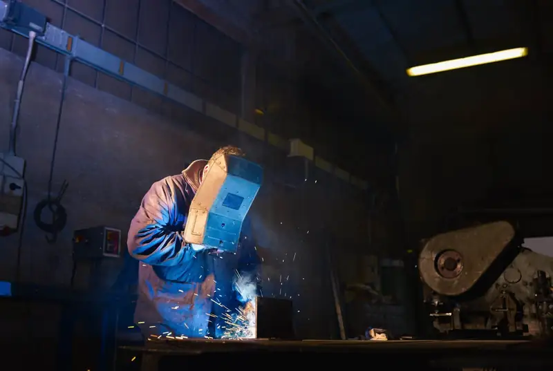
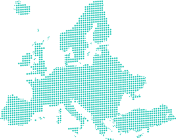
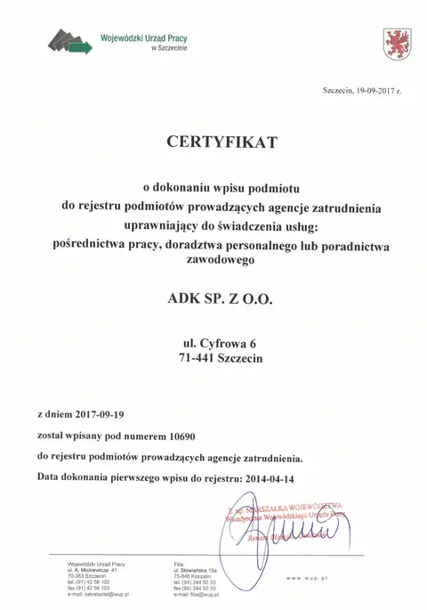
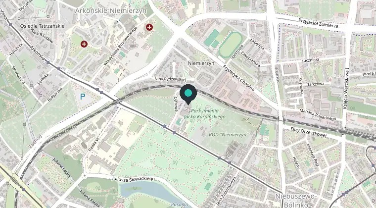

Praca za granicą w budownictwie i przemyśle
- Szwajcaria
- Niemcy
- Holandia
- Dania
Szukamy spawaczy, monterów rurociągów, cieśli, elektryków, murarzy i operatorów maszyn. Legalna umowa, pomoc w formalnościach i zakwaterowaniu.
lub zadzwoń: +48 662 954 458
Aktualne oferty pracy
Wpisz zawód albo wybierz kraj. Wyniki pokazują się od razu.
Najczęściej szukani fachowcy
Kliknij zawód, żeby zobaczyć wszystkie ogłoszenia z tej grupy.
Gdzie pracujemy
Stawki podajemy tak, jak są w ogłoszeniach - kwota zależy od kwalifikacji, miejsca i stanowiska.

Szwajcaria
28-43 CHF brutto za godzinę, w większości ofert z dietami
Szwajcarska umowa o pracę, pozwolenia na pracę i pobyt załatwiane w ramach rekrutacji.
Niemcy
2850-3300 EUR netto miesięcznie lub 30-32 EUR/h
Umowa o pracę, w części ofert mieszkanie opłacone. Drezno i inne miasta.
Holandia
475-660 EUR netto tygodniowo za 40 godzin
Montaż fasad, okien, płyt GK, instalacje. W części ofert bezpłatne mieszkanie.
Dania
900-1490 EUR netto tygodniowo za 50-55 godzin
Rurociągi i elektryka, m.in. projekt farmaceutyczny w Hillerød.
Austria i Irlandia - w tej chwili bez ogłoszeń. Możesz wysłać CV, a odezwiemy się, gdy pojawi się praca.
Warunki pracy
Na podstawie aktualnych ogłoszeń. Szczegóły każdej oferty są w jej opisie.
Co zapewnia pracodawca
- Umowa o pracę. W Szwajcarii - szwajcarska umowa i ubezpieczenie: zdrowotne, emerytalne, wypadkowe i na wypadek bezrobocia.
- Pozwolenia na pracę i pobyt w Szwajcarii - załatwiane w ramach rekrutacji.
- Zakwaterowanie organizowane przez pracodawcę. W Szwajcarii zwykle 400-950 CHF miesięcznie, w części ofert z Niemiec, Holandii i Danii mieszkanie jest opłacone.
- Diety dzienne w większości ofert ze Szwajcarii, od 13,50 do 140 CHF netto za dzień.
- Praca od poniedziałku do piątku, nadgodziny i soboty po uzgodnieniu.
- Pomoc na każdym etapie - w formalnościach przed wyjazdem, a w części ofert także opieka biura na miejscu.
Czego oczekuje pracodawca
- CV po niemiecku lub angielsku. W wielu ofertach CV po polsku nie jest przyjmowane - wzory są niżej.
- Doświadczenie w zawodzie, zwykle od 3 do 5 lat, potwierdzone świadectwami pracy lub referencjami.
- Certyfikaty i uprawnienia, np. spawalnicze 135, 141, FM3, FM5.
- Znajomość niemieckiego lub angielskiego. W części ofert wystarczy jedna osoba w grupie.
- Własny samochód - w wielu ofertach jeden na grupę.
Od CV do wyjazdu
Tak wygląda rekrutacja krok po kroku:
- Wybierasz ogłoszenie i wysyłasz CVPrzez formularz, e-mail lub WhatsApp. CV po niemiecku lub angielsku, do tego świadectwa pracy i certyfikaty.
- Rozmowa z rekruteremSprawdzamy doświadczenie i referencje, pytamy, od kiedy możesz zacząć.
- Decyzja pracodawcy i warunkiPrzedstawiamy Cię pracodawcy i ustalamy formę umowy, stawkę oraz termin startu.
- Formalności i wyjazdPomagamy w dokumentach i zakwaterowaniu. Na miejscu pracujesz na umowie z pracodawcą.
Dokumenty do pobrania
Wzory CV w trzech językach. Wypełnij wersję w języku, którego wymaga ogłoszenie.
Dobre CV to podstawa
Rekruter na pierwsze przejrzenie CV poświęca od 30 sekund do półtorej minuty. Na górze wpisz zawód, lata doświadczenia, uprawnienia i języki. Dołącz kopie świadectw pracy i certyfikatów.


O agencji ADK
Jesteśmy zespołem rekruterów ze Szczecina. Od 2006 roku pracujemy dla firm z branży budowlanej i konsultingowej, m.in. dla:
Laing O'Rourke, Farrans, Mowlem/Carillion, Graham
Organizujemy legalną pracę dla wykwalifikowanych fachowców i pomagamy w formalnościach. Znamy problemy, z jakimi ludzie mierzą się w obcym kraju, dlatego oprócz sprawdzonej oferty pomagamy też w zorganizowaniu zakwaterowania i wszystkiego, co potrzebne do rozpoczęcia pracy.
Oferty kierujemy do osób znających język obcy - przyda się w pracy i w codziennym życiu za granicą.
Dla pracodawców
- rekrutacja pracowników fizycznych i kadry inżynierskiej
- doradztwo w procesach budowlanych i negocjacjach umów handlowych
Szukasz fachowców z Polski? Napisz, jakich specjalistów potrzebujesz.
info@adkpoland.euWyślij CV
Zostaw dane i dołącz CV - rekruter skontaktuje się w sprawie pasujących ofert.
ADK Sp. z o.o.
ul. Cyfrowa 6 (Technopark Pomerania)
71-441 Szczecin

© OpenStreetMap